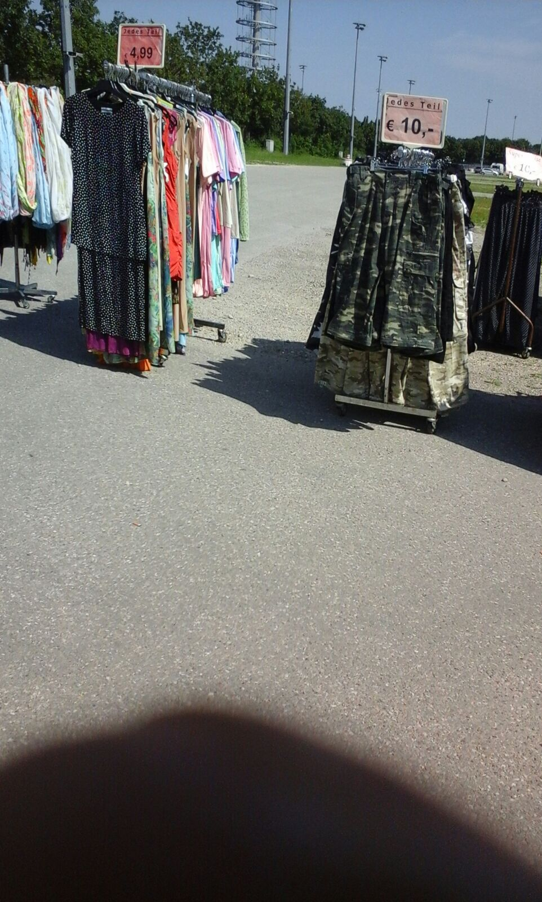
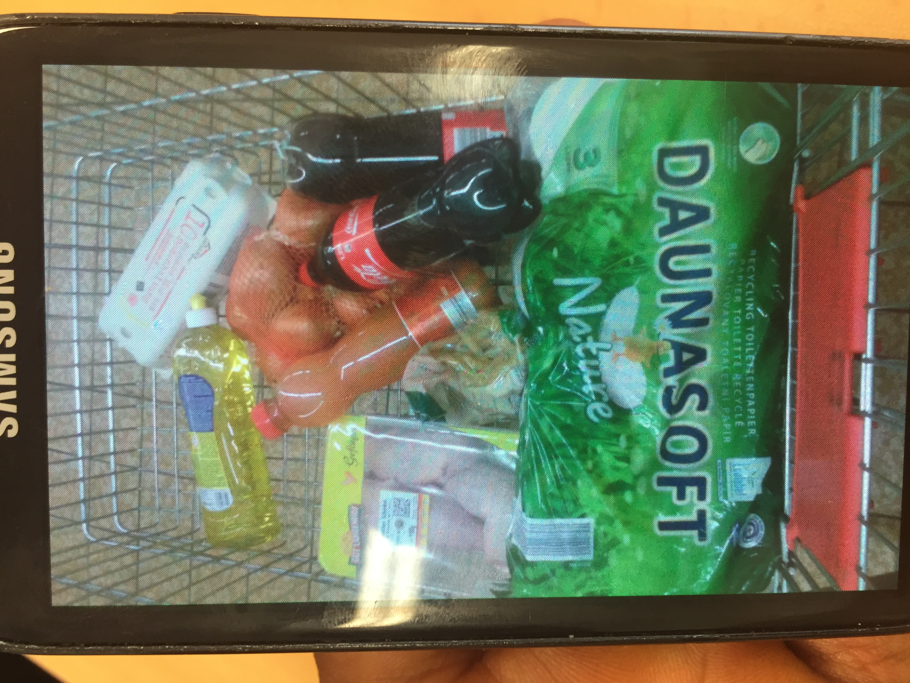

Redesigning refugee integration programs in Germany
Developed human-centered design project to improve integration process for refugees in Munich. Led user research to understand the needs of refugees from 10 different countries-delivering design recommendations to key decision-makers
Background
The "European refugee crisis" in 2015 was characterized by an sharp increase in the number of refugees applying for asylum in Europeam countries like Germany. This sudden arrival of asylum seekers left many European countries and their respective municipal governments with the challenge of resettling large numbers of refugees with insufficient resources.
Problem
How might we improve the resettlement process for refugees and asylum seekers in Munich, Germany?
User Research
We developed a mixed-methods research study that collected and analyzed consumption data from asylum seekers in Munich, Germany.
We recruited 30 participants, who were refugees from 9 different countries, seeking aslyum in Germany.
Findings
One of the primary goals for refugees seeking asylum in Germany was to feel like they belonged and had control over their lives in their city of resettlement. We found that items participants purchased fell into three categories:
- Clothing
- Food
- Gifts
The purchases asylum seekers made in these categories typically contributed to their overarching goal of finding agency and belonging–things that the existing resettlement system was not providing.

Clothing
Purchasing clothes not only contributes to participants' sense of empowerment and self expression, but also helps them integrate into their surrounding communities in Germany.
“I received second-hand clothing and it was a strange feeling. So the first thing I did was to go to [named store] and buy some clothes that I could choose and I can dress in and I can feel comfortable in and be happy with.”

Food
Most camp residents are not allowed to cook for themselves, limiting their eating choices to the food served in the cafeteria, the preparation of which they have no control. Participants expressed distaste for the catered food because it is not culturally relevant nor appetizing.
“We didn’t have money, so we were just eating from the camps. And normally, they cook for everyone, not individually. ...I don’t like lots of the food provided by the camp, so sometimes we didn’t eat…We had doubts about the meat. What is it? Did they cook it in our way, like how we cook? If we had money at that time, we could cook for ourselves.”
Participants typically purchased food to cook with other people. Even those living in camps with catered food often bought supplies to contribute to communal cooking.
“I bought these groceries because then I can cook and eat with my friends. We all share... you buy, then I cook and you cook and then we eat all together. For Ramadan we cooked together.”
Gifts
Whether the gift be for a birthday or Ramadan, the gifts serve as a means to strengthen relationships. Although the presence of a familial community remains limited in Germany, participants work to overcome bureaucratic loopholes in order to maintain these strong family ties.
Consider the example of Hadi from Pakistan. When asked how he spent the cash transfer, he explained how every year for his niece’s birthday, he would give her a present. But this year, given his situation, it was near impossible to do so. His status as an asylum seeker prohibits him from sending money or other items back to his family in Pakistan. Given the restrictions, Hadi tried to find a way around them. He used the cash-transfer to buy a pair of shoes, which he then gave to his roommate, who then phoned his brother in Pakistan and asked him to send a doll to Hadi’s niece on his behalf.
Reccomendations
Based on our findings from user research with refugees seeking asylum in Germany, we developed design recommendations to improve exisiting refugee integration processes and programs. We presented our findings and recommendations to key stakeholders within the municipal government of Munich, Germany.
Develop avenues for independent clothing & food purchases
We recommend a discounted clothing option for all asylum seekers with monthly income of less than €400. Similar to a thrift shop, donated clothes can be arranged in a store like setting and sold for discounted prices. Asylum seekers will then be able to make their own clothing and purchasing choices. Although we see this as the best and most affordable option, vouchers to existing clothing stores like H&M, C&A, Zara, or Lady.Mister, could also be an alternative.
Support adaptation to long term reality in camps
Many of the camps where asylum seekers live were originally designed as short-term reception centres. However, the reality is that the camp becomes a longer-term home and, as such, its physical infrastructure as well as arrangements such as food catering should be adapted to this reality if asylum seekers are to maintain their physical and mental health. Service providers should, for example, recognise the dual roles of cooking, buying and eating food both as a way for maintaining previous cultural practices and simultaneously as a basic way for learning to navigate and belong in a new place.
Pair asylum seekers with local families
We met a number of asylum seekers in Munich who have connected with local German families. Through these relationships, asylum seekers find stability and guidance by spending time with the families in a location that is not the camp, and also improve their German language skills. The local families, in turn, are able to serve as mentors, learn about a new culture, and engage in dialogue. More relationships like these could be created through a formalised ‘host family’ program.